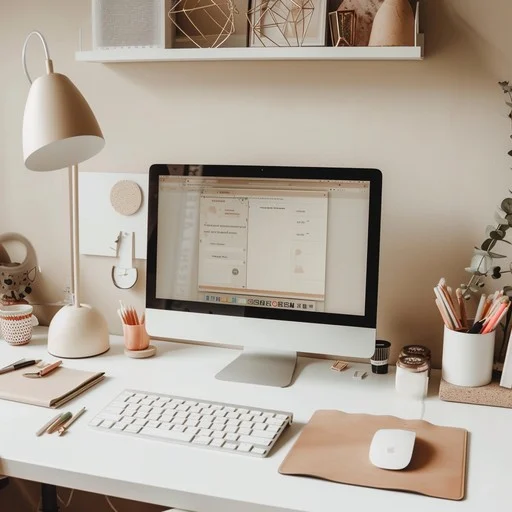

I finally sit down and open my laptop, and for once my brain actually cooperates. I start clicking through my assignments, answering emails, fixing little things I’ve been avoiding all week. It feels weirdly good to be caught up for a second, like I’m finally moving at the same speed as my day.
next →